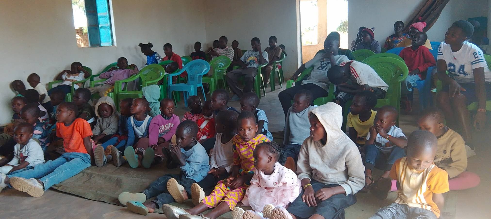
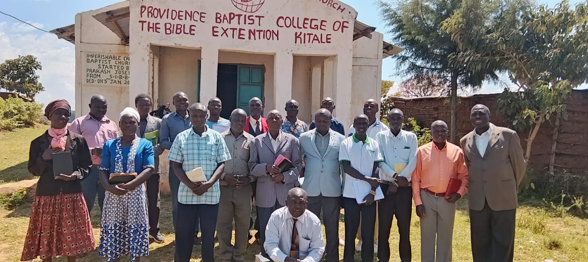

Pastoral Team
Fred Wanyonyi
Senior Pastor & Founder
Called to ministry in 2020, he leads the church with passion, vision and commitment to God's Word.
IMPERISHABLE CROWN BIBLE BAPTIST CHURCH
Meet the people who dedicate their time and gifts to serving our church family.
SERVING TOGETHER IN FAITH
Meet the members serving in pastoral care, church administration and ministry.
Showing 8 members
Senior Pastor & Founder
Called to ministry in 2020, he leads the church with passion, vision and commitment to God's Word.
Associate Pastor
Supports women's ministry and discipleship programs, helping members grow in faith and service.
Church Elder
Supports church administration and works with the pastoral team to serve the congregation.

Church Elder
Supports prayer ministry and pastoral care, encouraging members through prayer and fellowship.
Head Deacon
Coordinates outreach and community service while supporting the practical work of the church.
Deaconess
Supports hospitality and the welcome ministry, helping visitors and members feel at home.

Youth Ministry Leader
Encourages young people to grow spiritually, build positive relationships and serve their community.

Ministry Volunteer
Serves the church family and supports ministry activities and fellowship.
No members found in this category.